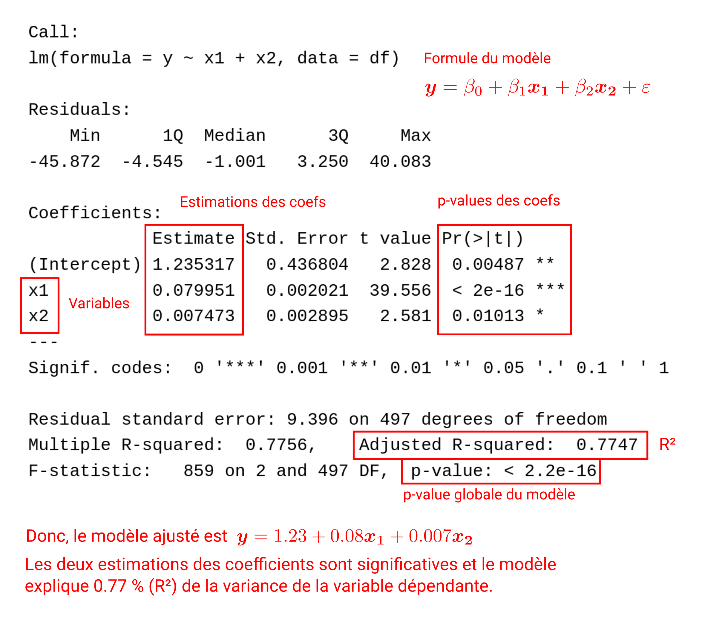

Durant ce TD, vous apprendrez à réaliser une analyse descriptive de flux ainsi qu’à les modéliser via un modèle gravitaire.
Ce que vous apprendrez sur R
Manipulation de données :
Manipuler une matrice
Modélisation :
Ajuster et évaluer une régression linéaire
Ajuster et évaluer un modèle par Pseudo Maximum Likelihood
Visualisation :
Cercles proportionnels
Choroplètes
Carte en oursin
3.1 Analyse descritive des flux
Méthode
Voilà les étapes de l’analyse. Il s’agit d’une démarche classique de résolution d’une question de recherche à visée descriptive.
Formulation de la question et de la méthode
Identification et collecte des données nécessaires
Prépraitement des données
Application de la méthode
Analyse des résultats
Interprétation des résultats
Le TD suit cette démarche.
Question : Comment sont réparties les migrations résidentielles des finistériens sur le territoire du Finistère et que cela dit-il de ce territoire ?
Méthode : analyse descriptive d’une matrice origine/destination (OD)
3.1.1 Données
Données nécessaires :
Une donnée, la plus récente possible, indiquant les flux entre chaque commune du Finistère.
Comme je souhaite réaliser des cartes, cette donnée doit-être spatiale. Si elle ne l’est pas, il faudra que je la joigne à une donnée spatiale des communes.
Le producteur des données de mobilité de référence à l’échelle du territoire français est l’INSEE (encore une fois). La donnée fournie par l’INSEE est issue du recensement de la population, vous la trouverez ici.
Question
Quand a été produite la donnée ?
Cette donnée renseigne les flux sur quelle période ?
S’agit-il d’une donnée spatiale ?
Instructions : chargement des données
Charger les migrations résidentielles.
Télécharger les communes du Finistère avec happign::get_wfs(). Vous utiliserez l’argument query qui permet de filtrer les données via le langage de requête ECQL. Ici, on veut récupérer uniquement les communes dont le code INSEE commence par 29 (donc, le Finistère). Dans la mesure où le ECQL possède une syntaxe proche du SQL, on écrira la requête suivante : code_insee LIKE '29%'.
Pour rappel, pour trouver de l’aide sur une fonction, vous pouvez regarder la documentation de la fonction directement dans R : ?get_wfs(). Vous pouvez également regarder la documentation sur le site web du package s’il existe (les fonctions du package sont indiquées dans l’onglet Reference).
Code
# Charger les données INSEEdt_mobi <-read_delim("data/src/base_flux_mobilite_residentielle_2020.csv") |> janitor::clean_names()## Rows: 482070 Columns: 5## ── Column specification ────────────────────────────────────────────────────────## Delimiter: ";"## chr (4): CODGEO, LIBGEO, DCRAN, L_DCRAN## dbl (1): NBFLUX_C20_POP01P## ## ℹ Use `spec()` to retrieve the full column specification for this data.## ℹ Specify the column types or set `show_col_types = FALSE` to quiet this message.# Récupérer les communes sur le serveur de l'IGN# Ne télécharger les données que si elles n'existent pas en localcom_path <-"data/src/com_finistere_bdtopov3_2026.gpkg"if (file.exists(com_path)) {cat("Le fichier existe déjà, chargement...") coms <-read_sf(com_path)} else { coms <-get_wfs(layer ="BDTOPO_v3:commune",ecql_filter ="code_insee_du_departement = '29%'",interactive = false ) |>st_transform(2154)write_sf(coms, com_path)}## Le fichier existe déjà, chargement...
Le move écolo
Quand vous téléchargez des données, vous consommez de l’énergie. Si vous refaites tourner votre script de nombreuses fois, vous téléchargerez de nouveau les données autant de fois ; ce n’est pas très écolo. Aussi, une fois que vous avez téléchargé la data, vous pouvez l’enregistrer sur votre machine. Vous pouvez par exemple écrire :
com_path <-"data/src/com_finistere_bdtopov3_2026.gpkg"if (file.exists(com_path)) {print("File already exists, loading it...") coms <-read_sf(com_path)} else {# [téléchargez les données avec happign]write_sf(coms, com_path)}
La syntaxe IF/ELSE (alternative) est une des briques fondamentales de l’algorithmique. Si vous voulez plus d’informations, référez à la Section 6.1.
Instructions : prétraitement
Filtrer les données de mobilités résidentielles pour ne retenir que les mobilités qui ont eu lieu en Finistère. Retirer également les mobilités intra-communales (codgeo != dcran).
Notez que l’on utilise une sparseMatrix (matrice creuse) et non une matrix ordinaire (matrice dense). Les sparseMatrix sont beaucoup plus efficientes que les matrix dans la mesure où elles ne stockent que les valeurs non-nulles.
3.1.2 Rappels sur les indices
Soit une matrice origine/destination (OD). On admet que les indices \(i\) et \(j\) identifie les mêmes entités spatiales. Ainsi, le flux \(O_i\) est affilié à la même entité spatiale que le flux \(D_j\).
Par caractériser les flux de chaque entité spatiale de la matrice OD, on commence généralement par calculer le volume, le solde et le taux d’attractivité de chaque entité spatiale.
Le volume\(V\) de l’entité spatiale \(i\) est la somme de son flux total émis et reçu.
Le taux d’attractivité\(A\) de l’entité \(i\) correspond au solde de l’entité \(i\) divisé par le volume de l’entité \(i\).
\[
A_{i} = \frac{S_{i}}{V_{i}}
\]
Il est également possible de construire des indices qui tirent parti de l’ensemble des informations de la matrice. On peut par exemple construire un indicateur d’attractivité\(\text{IA}_i\) pour l’entité spatiale \(i\). Ce dernier correspond au total du flux reçu dans l’entité \(i\) divisé par le total des flux émis et reçu dans l’aire d’étude.
Un indice d’émissivité\(\text{IE}_i\) peut-être calculé de façon similaire en divisant le total flux émis dans une entité spatiale \(i\) par le total des flux émis et reçus dans l’aire d’étude.
Il est possible d’évaluer le caractère préférentiel du lien entre deux entités spatiales, en comparant le flux effectif au flux attendu : c’est l’indice de relation préférentielle\(\text{IRP}_{ij}\) entre les entités \(i\) et \(j\).
Si \(\text{IRP}_{ij} > 1\), alors les lieux \(i\) et \(j\) ont une relation préférentielle : le flux observé de \(i\) vers \(j\) est plus important que celui qu’on attendrait étant donné l’émissivité de \(i\) et l’attractivité de \(j\).
3.1.3 Calcul des indices
Instructions
À l’aide de la matrice OD, calculez, pour chaque entité spatiale : le total des flux émis, le total des flux reçus, le volume, le solde et le taux d’attractivité. Vous aurez à utiliser les fonctions rowSums() et colSums().
Pour chaque entité spatiale, calculer l’indice d’attractivité et d’émissivité.
Pour chaque combinaison d’origine/destination, calculez l’indice de relation préférentielle. Pour calculer le produit du flux total émis par l’entité \(i\) par le flux total reçu par l’entité \(j\) pour les combinaisons en une seule fois, vous utiliserez l’opérateur %o% qui symbolise le produit externe. Au final, vous obtiendrez une matrice des relations préférentielles. Remplacez les valeurs de la diagonale par 0 (diag(m_pref) <- 0) et remplacez les Inf par 0 (m_pref[!is.finite(m_pref)] <- 0).
3.1.4 Analyse des résultats
3.1.4.1 Statistiques des indices
Les indices ainsi calculé ne sont pas très lisibles. Avant d’analyser les résultats, on les enregistre dans un DataFrame pour faciliter leur analyse.
Instructions : prétraitement des indices
Créez un dataframe Avec l’ensemble des indices précédemment calculés (sauf les relations préférentielles bien entendu). Chaque ligne correspondra à une commune.
Proposez des statistiques élémentaires pour chaque indices (c.f.Section 8.1.1).
3.1.4.2 Cartographie
Le DataFrame des indices n’est pas spatial. Il faut donc effectuer une jointure avec les communes pour pouvoir cartographier les résultats. En fonction de ce que l’on souhaite cartographier, il faudra calculer les centroïdes des communes pour réaliser une carte en cercles proportionnels.
Instructions : cartographie
Joignez le dataframe des indices que vous venez de créer aux données spatiales des communes.
Si on souhaite cartographier des stocks, on utilisera des cercles proportionnels. Dans ce cadre, il faut d’abord transformer les polygones en points. Pour cela, vous créerez un nouveau data.frame spatial de géométrie points avec la fonction sf::st_centroids().
Cartographier l’ensemble des indices. Attention à la sémiologie graphique, il n’y a pas que des stocks…
Pour cartographier des cercles proportionnels avec ggplot2 et un objet sf de géométrie point, on utilise l’argument size dans l’esthétique (aes) de la couche. Pour un rendu plus léché, vous pouvez également doubler l’information en colorisant les cercles proportionnels via l’argument fill. Pour que la coloration fonctionne, il faut utilisant un symbole de point spécial pch = 21.
ggplot() +geom_sf(data = centroids,aes(size = var, fill = var),pch =21 ) + ... # le reste de votre code
Pour cartographier des choroplètes, il suffit d’utiliser l’argument fill de l’esthétique de la couche :
ggplot() +geom_sf(data = polygons, aes(fill = var)) + ... # le reste de votre code
Pour une commune que vous choisirez, cartographiez ses relations préférentielles. Vous devrez d’abord convertir la matrice des relations préférentielles en data.frame :
Vous devrez ensuite rapatrier les géométries des communes dans le data.frame (comme précédemment) pour cartographier.
3.1.4.2.1 Les carte de flux sous R
Les cartes en cercles proportionnels ne sont pas vraiment appropriées quand on veut représenter des flux. On privilégiera des cartes en oursin ou des cartes de flux (Flow map) stricto sensu.
Carte de flux. Export des vins français en 1864 par Charles Joseph Minards.
Carte en oursin valué. La clientèle des services palois (services moteurs) Di Méo and Guérit (1992)
Di Méo, Guy, and Franck Guérit, eds. 1992. “Chapitre II. Étude comparée de l’offre des services aux entreprises à Pau et à Bayonne : caractères et rayonnement géographique.” In La ville moyenne dans sa région : Pau, les Pays de l’Adour et l’Aquitaine, 79–115. Politiques urbaines. Pessac: Maison des Sciences de l’Homme d’Aquitaine. https://doi.org/10.4000/books.msha.15216.
ggplot2 ne possède pas de fonction pour concevoir ce genre de cartes. Rassurez vous, je ne vais pas vous demander d’en produire une ! À la place, on peut s’appuyer sur les packages mapsf et ttt.
Par exemple, on peut cartographier l’ensemble des flux entrant et sortant pour une entité spatiale avec des flèches plus ou moins épaisses en fonction de la quantité échangée.
Code
library(mapsf)library(ttt)# Les flux associées à la communecc <-29195# Récupérer tous les flux entrant et sortant associés à la communedt_plot <-filter(dtp, i == cc | j == cc)# Récuperer le nom de la commune concernéecom <-unique(pull(filter(dt_mobi_fin, codgeo == cc), libgeo))mf_shadow(st_union(polygons))mf_map( polygons,col ="#eeedee",lwd =0.5,add =TRUE)flows <- ttt::ttt_flowmapper(x = polygons,xid ="id",df = dt_plot,dfid =c("i", "j"),col ="#ffc524",dfvar ="fij",add =TRUE)ttt::ttt_flowmapperlegend(x = flows,title ="Flux inter",txtcol ="#ffc524")mf_title(txt = glue::glue("Flux entrant et sortant de {com}"),bg ="#ffc524", fg ="White", pos ="left")mf_arrow()mf_scale()
Comme vous avez pu le constater, avec mapsf il existe des fonctions qui permettent de créer directement une flèche d’orientation (mf_arrow()) ou une échelle (mf_scale).
Instructions
Regardez les flux pour d’autres communes.
Comparez les flux (entrants et sortants) de deux communes
Cartographiez l’ensemble des flux sur le territoire.
Quand on a beaucoup de flux à cartographier, il est courant de filtrer les flux de moindre importance (par-ex. par quantile).
Question
Au regard des différentes analyses réalisées, que pouvez vous dire des migrations résidentielles en Finistère ?
3.2 Modélisation des flux
3.2.1 Théorie
Le modèle gravitaire est directement inspiré de la loi universelle de gravitation de Newton Equation 3.1.
Les paramètres de cette loi sont, comme son nom l’indique, universelles. De tels paramètres sont appelés des constantes, ici l’exposant de la distance \(a = 2\) et \(k = G = 6.67430 \times 10^{*11} \text{m}^3.\text{kg}^{-1}.\text{s}^{-2}\).
Contrairement à la loi universelle de la gravitation, les paramètres des modèles gravitaires appliqués à des phénonènes sociaux doivent être estimés : il ne s’agit pas de constantes (Equation 3.2).
\[
F_{ij} = k\frac{M_iM_j}{d_{ij}^a}
\tag{3.2}\]
À partir de cette formulation, on dérive deux façons de modéliser les flux. La première se concentre uniquement sur la distance entre \(i\) et \(j\) en modélisant l’intensité du flux plutôt que les flux eux-mêmes. Cela revient à diviser la \(F_{ij}\) par le produit des masses de \(i\) et \(j\). De cette façon, on obtient une fonction affine dont les paramètres \(a\) (la pente) et \(k\) (l’intercepte) peuvent être estimé par la méthode des moindres carrés ordinaires (OLS). Comme le modèle gravitaire est non-linéaire dans ses paramètres, il convient d’utiliser les logs pour satisfaire l’hypothèse de linéarité de la régression linéaire (Equation 3.3).
\[
\ln\frac{F_{ij}}{M_iM_j} = -a \ln d_{ij} + \ln k
\tag{3.3}\]
La deuxième manière s’intéresse aux flux stricto sensu. Dans ce cas, la variable dépendante demeure \(F_{ij}\) et les masses sont intégrées dans les variables explicatives avec des paramètres (\(\beta_n\)) (Equation 3.4). Comme pour le modèle d’intensité des flux, les paramètres sont estimés par la méthode des moindres carrés ordinaires.
\[
\ln F_{ij} = \ln k + \beta_1 \ln M_i + \beta_2 \ln M_j - a \ln d_{ij}
\tag{3.4}\]
Deux objections principales ont été formulées quant à l’utilisation de la méthode des moindres carrés pour estimer les paramètres du modèle gravitaire, les voici :
Les zéros : le fait d’utiliser une transformation logorathmique implique l’absence de flux nul, ce qui, en pratique n’est pas toujours le cas.
L’hétéroscédasticité : la variance de l’erreur n’est généralement pas homogène dans le cas des modèles gravitaires. La méthode des moindres carrés est alors inadaptée pour estimer les paramètres.
Pour résoudre ces deux problèmes, Silva and Tenreyro (2006) proposent d’utiliser une autre méthode d’estimation des paramètres : la PML (Pseudo-Maximum Likelihood).
Silva, J. M. C. Santos, and Silvana Tenreyro. 2006. “The Log of Gravity.”The Review of Economics and Statistics 88 (4): 641–58. https://doi.org/10.1162/rest.88.4.641.
À partir des prédictions des modèles, on peut identifier des préférences et des barrières dans les flux. Il s’agit tout simplement d’une analyse des résidus (de l’erreur de prédiction). Si le résidu est positif, alors il y a un effet barrière : les flux observés sont plus faibles que les flux prédits, donc il y a des facteurs non inclus dans le modèle que les contraigent. À l’inverse, si le résidu est négatif, il existe des effets non inclus dans le modèle accroissent les flux. Un exemple classique d’effet barrière est la présence d’une frontière entre deux pays.
3.2.2 Données et prétraitement
Nous allons utiliser un exemple très simple : les mobilités résidentielles de l’île de France.
Instructions
Chargez les flux de mobilités résidentielles de l’Île de France et les département assosiés.
Les prétraitements suivants ont été appliqués pour générer le jeu de données des flux :
Récupération des données :
Récupération des données INSEE de mobilité résidentielle totale
Récupération des données INSEE de population
Récupération des départements en format spatiale (IGN)
Prétraitement :
Calcul des distances entre les départements
Jointures de l’ensemble des données et filtre des départements.
3.2.3 Modélisation
Le package gravity implémente les méthodes modernes d’estimation du modèle gravitaire.
3.2.3.1 Ajustement
Instructions
Ajustez deux modèles :
Le premier par OLS.
Le deuxième par PPML. Appuyez vous sur la documentation du package gravity. Utilisez l’argument robust = TRUE.
Pour le modèle OLS, utilisez la fonction de base lm(). Il vous faudra écrire une formule. Par exemple, si vous disposez d’un data.frame avec une variable dépendante y et des variables explicatives x1 et x2, alors, la fonction lm() s’écrira :
# Données simuléesset.seed(123)y =rnorm(500, 5, 20)x1 = y *rnorm(500, 10, 5)x2 = y *rnorm(500, 2, 7)df <-data.frame(y = y, x1 = x1, x2 = x2)# Ajustement d'une régression linéaire par OLSres_lm <-lm(y ~ x1 + x2, data = df)
Attention, n’oubliez pas que pour le modèle gravitaire il faut utiliser le log des variables (e.g. log(y) ~ log(x1) + log(x2)) quand on utilse une estimation par OLS.
Pour récupérer un résumé de l’ajustement du modèle, on utilise la fonction summary(). C’est aussi le cas pour le résultat des modèles du package gravity.
summary(res_lm)
3.2.3.2 Interprétation
La figure décrit le résumé d’un modèle linéaire sous R.

Le résumé d’un modèle ajusté par PPML via le package gravity est légèrement différent. On retrouve les estimations et la p-value des coefficients mais on n’a pas de \(R^2\). Cela vient du fait que l’on n’utilise pas une régression linéaire “classique”. À la place, on a la déviance d’un modèle nulle (Null deviance) et la déviance du modèle ajusté (Residual deviance). Je ne vais rentrer dans les détails statistiques. Retenez simplement que ce qui est retourné par la majorité des résumés (summary()) de modèle (R2, Deviance, Likelihood, etc.) indique la qualité de l’ajustement des modèles ce qu’il ne faut pas confondre avec la performance prédictive du modèle.
Instructions
Interprétez les coefficients des deux modèles.
3.2.3.3 Comparaison des modèles
La qualité d’ajustement de modèles différents ne peut pas faire l’objet d’une comparaison directe. Imaginez que vous mesurez la vitesse de deux coureurs qui s’exercent respectivement sur une piste de course et sur une piste ensamblée. Vous ne pouvez pas comparer la performance des deux coureurs car ils ne courent pas dans les mêmes conditions. C’est un peu pareil avec les mesures d’ajustement des modèles, même si vous utilisez le \(R^2\) (ce qui corresond à la mesure de la vitesse dans l’analogie) pour évaluer l’ajustement de deux modèles, si ces derniers sont différents, alors la comparaison n’aura pas de sens.
En revanche, il est tout à fait possible de comparer la capacité prédictive de modèles différents dans la mesure où elle est évaluée seulement à partir des prédictions réalisées par les modèles. Il en existe une kyrielle, que ce soit pour comparer des variables continues (problème de régression) ou catégorielle (problème de classification). On s’intéressera à deux des mesures plus utilisées dans le cadre de problème de régression (c-à-d. \(y\) est continue) : le biais (bias en anglais) et le RMSE.
Le \(\text{bias}\) correspond tout simplement à la différence moyenne entre les valeurs observées \(y\) et les valeurs prédites \(\hat{y}\). Autrement dit, il s’agit de l’erreur moyenne. Si le biais est positif, alors le modèle à tendance à sous-estimer \(y\), s’il est négatif, il aura tendance à sur-estimer \(y\).
Le \(\text{RMSE}\) correspond quant-à-lui à la racine carrée de la somme de la différence des erreurs au carré divisée par le nombre d’individus (\(N\)). Il s’agit de la racine carrée du \(\text{MSE}\) (Mean Square Error). Le \(\text{RMSE}\) pénalise les larges erreurs en prenant le carré des erreurs.
Il est également courant de donner une mesure de la corrélation entre \(y\) et \(\hat{y}\). Typiquement, on utilisera la corrélation de pearson.
\[
r = \frac{\sum_{i=1}^{N}(y_i - \bar{y})(\hat{y}_i - \bar{\hat{y}})}{\sigma_y\sigma_{\hat{y}}}
\]
Instructions
Comparez le biais, le \(\text{RMSE}\) et le coefficient de corrélation de pearson des deux modèles.
Pour extraire les valeurs prédites des modèles, il faut utiliser la propriété fitted des modèles ajustés (e.g.lm_res$fitted). Attention encore une fois, la régression linéaire a été estimé à partir de logs, il faut donc utiliser la fonction exponentielle (exp()) pour retrouver les valeurs dans l’unité de base.
3.2.3.4 Analyse des résidus : préférences et barrières
Instructions
Faîtes une cartographie des barrières et des préférences pour le modèle gravitaire ajusté par PPML. Discutez les résultats.
Pour gagner du temps, je vous ai écrit une fonction qui permet de créer une carte de flux (via ttt et mapsf) des résidus.
Code
#' Carte de flux des résidus soit positif (barrière) soit négatif (préférence)#'#' @param dt_flows data.frame contenant les identifiants de i (la variable#' doit-être nommée from) et j (la variable doit-être nommée to)#' @param basemap object sf contenant la géométrie des entités spatiales. Une#' variable code_insee doit être présente.#' @param res_var char indiquant le nom de la variable de résidus#' @param th num quantile à utiliser pour filtrer les résidus#' @param type char cartographier les effets barrière ou les directions#' préférentielles#'#' @return une carte mapsfmap_resid <-function( dt_flows, basemap, res_var,th =0.33,type =c("barriere", "pref")) { dtp <-mutate(dt_flows, i =as.numeric(from), j =as.numeric(to)) |>select(i, j, .data[[res_var]]) |>rename(fij = .data[[res_var]])# Choix du résidu à cartographierif (type =="pref") { dtp_plot <-filter(dtp, fij <0) |>mutate(fij =abs(fij)) } else { dtp_plot <-filter(dtp, fij >0) } dtp_plot <-filter(dtp_plot, fij >quantile(fij, th))# Prétraitement dep coms_plot <-select(basemap, code_insee) |>mutate(id =as.numeric(code_insee))mf_map( coms_plot,col ="grey",lwd =0.5,add =TRUE ) flows <- ttt::ttt_flowmapper(x = coms_plot,xid ="id",df = dtp_plot,dfid =c("i", "j"),col ="#ffc524",dfvar ="fij",add =TRUE ) ttt::ttt_flowmapperlegend(x = flows,title ="Flux inter",txtcol ="#ffc524" )}# par exemplemap_resid(df_res_model, departement_sf, res_var ="res_poi", th =0.6, type ="pref")